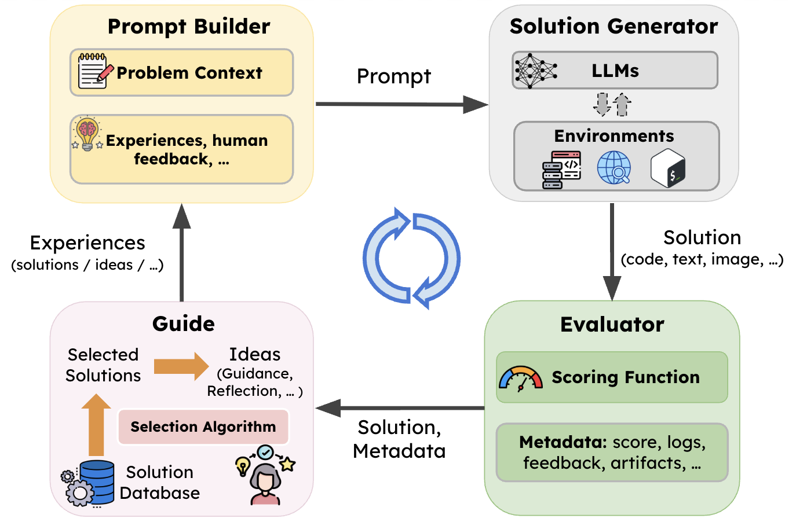
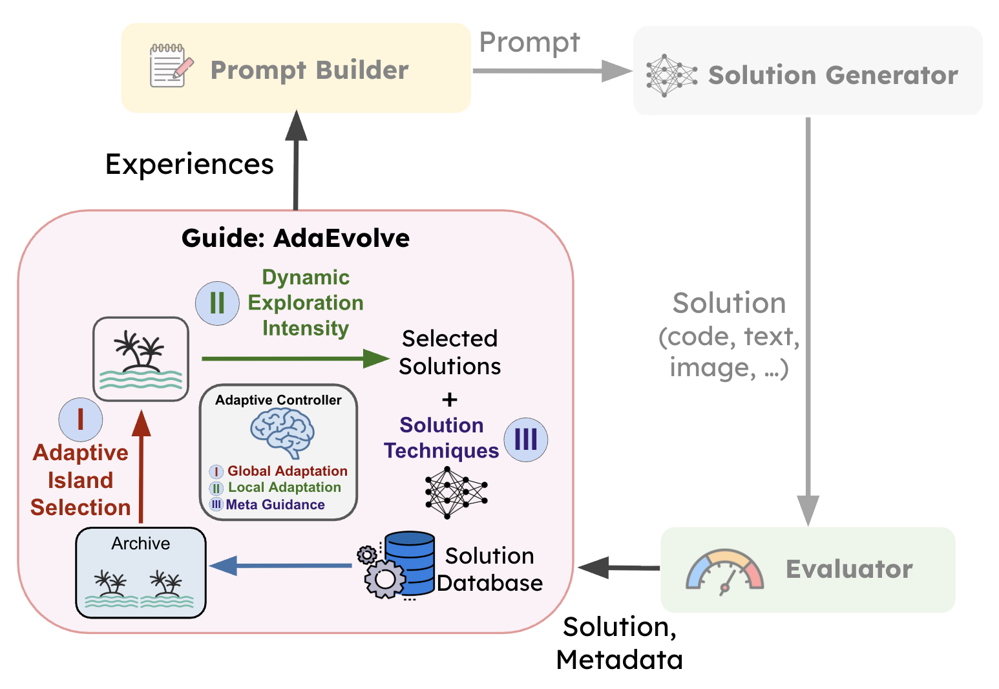

TL;DR: We introduce SkyDiscover, a flexible and modular framework for AI-driven discovery. It provides a unified interface across ~200+ real-world optimization tasks. Using SkyDiscover, we build two algorithms in under 2k LoC, achieving:
- Best open-source performance — ~20% higher median on 176 competitive programming problems.
- Match or exceed AlphaEvolve on 8 math and 6 systems problems.
- Real-world discoveries — 41% lower cloud cost, 4.5x faster MoE balancing, 29% lower KV-cache pressure.
Code: github.com/skydiscover-ai/skydiscover
Background: The Rise of AI-Driven Discovery
A defining capability of intelligent systems is the ability to learn from experience. One especially powerful paradigm is LLM-driven search, pioneered by AlphaEvolve: maintain a population of solutions, construct prompts with past experiences, generate new candidates, evaluate them, and iterate.

Frameworks like GEPA, OpenEvolve, and ShinkaEvolve have demonstrated promise — AlphaEvolve discovered new matrix multiplication algorithms, GEPA achieved near-perfect Claude Code task completion, and these results establish LLM-driven search as a powerful paradigm.
Challenge: Lack of Modularity
Despite progress, today's frameworks are difficult to reuse, extend, or compare. Existing implementations tightly couple their components:
- OpenEvolve: couples MAP-Elites selection with fixed prompt templates.
- GEPA: couples Pareto-front selection with recombination embedded in prompts.
- ShinkaEvolve: integrates novelty rejection with adaptive LLM selection.
This slows progress: innovation requires modifying monolithic systems, and shared infrastructure is repeatedly reimplemented.
SkyDiscover: A Flexible Discovery Framework
We built SkyDiscover with two goals: generality (support diverse algorithms on shared benchmarks) and flexibility (implement new techniques without modifying the core).
Architecture

- Guide: Decides what to retrieve from past solutions and how to convert them into useful experiences.
- Prompt Builder: Combines problem context with the Guide's selected experiences.
- Solution Generator: Produces candidates via LLM reasoning with optional tool interaction.
- Evaluator: Scores candidates in isolated subprocesses.
The key extension is the Guide — it transforms evolutionary search from a fixed pipeline into a fully extensible discovery process by making guidance programmable.
SOTA Algorithms Built on SkyDiscover
We developed AdaEvolve and EvoX in under 2k LoC each, achieving state-of-the-art open-source performance.
AdaEvolve: Adapting the Search Process
Treats discovery as a non-stationary optimization process and dynamically adjusts search parameters based on the rate of progress.

- Global: Multi-island populations with bandit-based scheduling.
- Local: Per-island exploitation-exploration intensity tuning.
- Meta: New solution techniques when progress stalls.
EvoX: Evolving the Strategy Itself
EvoX evolves the discovery strategy itself using the LLM — both solutions and the strategies that generate them improve continuously.

- Selection: Which prior solutions to sample.
- Variation: How to modify solutions and present guidance.
Results
Evaluated with a fixed budget of 100 candidate generations.
Mathematical Optimization

Systems Optimizations
41% lower cloud cost, 4.5x faster MoE balancing, 29% lower KV-cache pressure.

Algorithmic Challenges
Mean 62.6, median 75.5 on 172 problems — 24% and 34% improvement over the best existing framework.

Case Studies
Circle Packing in Rectangle (n=21)
Place 21 circles to maximize total radii. From an empty program, AdaEvolve discovers geometric initializations + SLSQP refinement.

Max/Min Distance in 3D (n=14)
Spread 14 points evenly in 3D. EvoX starts from geometric seeds (rhombic dodecahedron, bi-capped antiprism).

Cloud Data Transfer (300GB, 6 destinations)
EvoX constructs shared relay trees forming Steiner-like topologies. Cost: $1,046 → $623.

MoE Expert Load Balancing
AdaEvolve discovers Webster's method with zigzag packing. Matches DeepSeek balance, 9.5x lower latency.

GPU Model Placement (PRISM)
EvoX discovers binary-search + best-fit-decreasing. KVPR 0.0339 — 29% better than human SOTA.

Getting Started
from skydiscover import run_evolution result = run_evolution( initial_program="/path/initial.py", evaluator="/path/evaluator.py", search="adaevolve", # or evox, gepa, openevolve, shinkaevolve model="gpt-5", iterations=100, )
Live Dashboard

Call for Action
- Use SkyDiscover to solve your problems and get SOTA results.
- Compare different methods in one place.
- Implement new discovery algorithms with the simple API.
- Contribute your problems as benchmarks.
Get Started with SkyDiscover
Check out the code and build your own discovery pipeline.
View on GitHubAcknowledgments: Supported by gifts from Accenture, AMD, Anyscale, Broadcom, Google, IBM, Intel, Intesa Sanpaolo, Lambda, Mibura, Samsung SDS, and SAP.